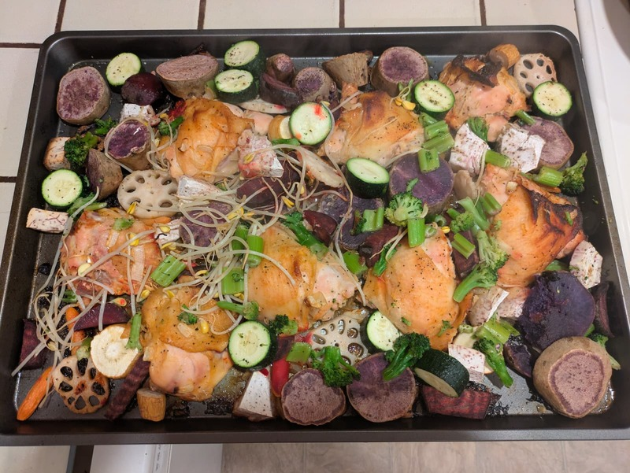

Miso Chicken Thighs

Summary
Prep time: 15 mins | Cook time: 40 mins | Total time: 55 mins | Servings: 4
Ingredients:
Miso Glaze:
- 3 tbsp white miso paste
- 1 tbsp soy sauce
- 1 tbsp rice vinegar
- 1 tbsp sesame oil
- 1 tsp sriracha (optional)
- 1 tbsp honey (optional)
Chicken and Vegetables:
- 6-8 bone-in, skin-on chicken thighs
- 1 large onion, cut into wedges
- 6 cloves garlic, smashed
- 2 tbsp olive oil
- Salt and pepper to taste
- Sesame seeds and scallions for garnish
Optional Root Vegetables (add in step 3):
- 2 medium sweet yams, cut into 1 inch cubes
- 2 small beets, peeled and cut into 1 inch cubes
- 1 cup taro, peeled and cut into 1 inch cubes
- 1 cup lotus root, peeled and sliced into 1⁄4 inch rounds
Optional Lighter Vegetables (add in step 7):
- 1 bunch asparagus, trimmed, cut into 2 inch pieces
- 1 red bell pepper, cut into chunks
- 1 cup broccoli florets
- 1 medium zucchini, sliced into half moons
- 1 cup mushrooms, halved
Instructions:
- Preheat oven to 425°F.
- Whisk together miso paste, soy sauce, rice vinegar, honey, sesame oil, and sriracha.
- Pat chicken thighs dry. Season skin with salt and pepper. Brush generously with miso glaze on all sides.
- Place chicken thighs skin-side up on a large sheet pan.
- Toss root vegetables, onion, and garlic with olive oil, salt, and pepper. Spread around the chicken in a single layer.
- Roast for 25 minutes.
- Add lighter vegetables to the pan. Brush chicken with remaining glaze.
- Roast for another 15 minutes until chicken skin is crispy and internal temp reaches 165°F.
- Garnish with sesame seeds and sliced scallions. Serve with rice if desired.